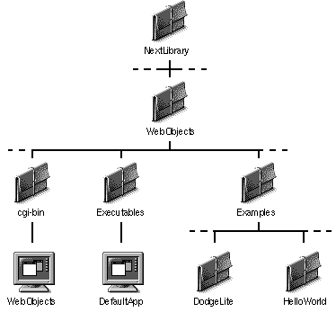
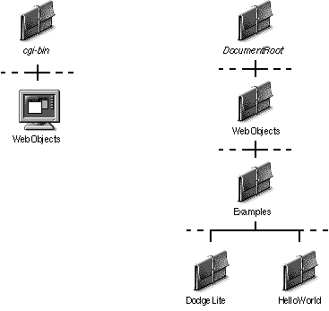

Table of Contents
Table of Contents
WebObjects is installed in a platform-dependent location. The following table summarizes the locations for each different platform:
---------------------------------------------- Platform Installation Directory---------------------------------------------- NEXTSTEP /NextLibrary/WebObjects Solaris /usr/NextLibrary/WebObjects Windows NT <NEXT_ROOT>/NextLibrary/WebObjects ----------------------------------------------
The NextLibrary/WebObjects directory, regardless of its location on your system, contains resources required to run WebObjects applications. Within it, you'll find the following subdirectories:

Figure 1 The Contents of NextLibrary/WebObjects
Your Web server must be able to access resources in these directories to run the examples and WebObjects applications you write. After installation of WebObjects, your Web server's directories should contain the following links or copies:
Figure 2 illustrates the resources that should be present in your Web server after the WebObjects installation procedure is completed. If any of these links or copies are missing, see the ReadMe file in NextLibrary/WebObjects for a step you may have missed.

Figure 2 The Contents of Your Web Server's Directories After Installing WebObjects
 Next Section
Next Section